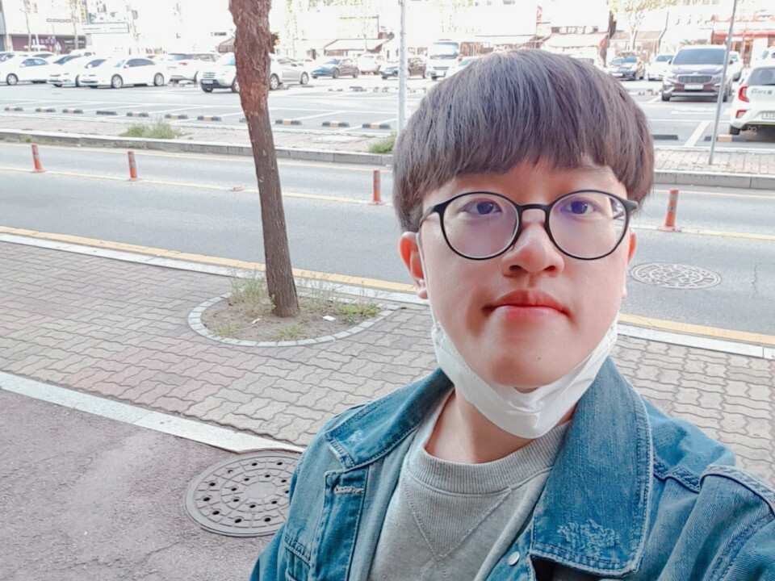
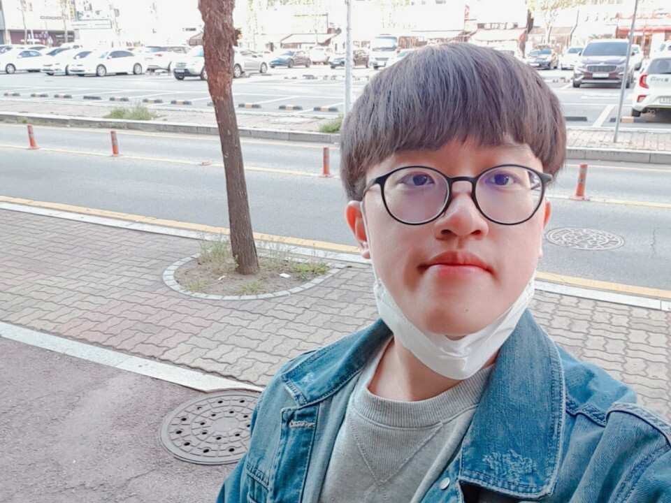

toring pro mentor
 

김태린 멘토님 (남)
서울대학교 화학과
학습 방법 멘토링
동기 부여 멘토링
1회 (90분)
149,000원 99,000원
4+1회 (1달)
596,000원396,000원
멘토링 가능 지역:
서울 전지역, 서울대, 고양시
멘토링 불만족시 100% 무료 멘토 변경
수시 일반전형
한국과학영재학교
멘토링 가능, 과외 가능
전공 강연 스타트업 멘토큐 화학 분야 파트너 강사
KSCY 청소년학술대회 화학 부문 퍼실리테이터
수학 문제 풀이 어플리케이션 콴다 S+ 랭크. 평균 평점 4.8, 답변 수
약 1만 개
한국장학재단 대학생 재능봉사 캠프 사업 멘토 활동
영재학교 대비반 화학 꼴찌를 기록하고 선생님께 조롱 섞인 일침을
들었을 때, 무엇이 문제인가 혼자 곰곰이 생각해보았습니다. 문제는
턱없이 부족한 개념지식이라는 걸 알고 난 후, 혼자서 하이탑을 닳도록
읽고 개념을 쌓았습니다. 그리고 그 결과 최고반에까지 오를 수 있었고,
지금은 서울대학교에서 화학을 공부하는 중입니다.
그 경험에서 느낀 점은 두 가지입니다.
- 결국 자극이 필요합니다. 때로는 진심 어린 위로와 칭찬이, 때로는 따끔한 일침이 필요합니다.
- 결국 본인이 노력해야 합니다. 복습/예습을 하고, 스스로 문제를 풀면서 어떤 개념이 적용될지 고민해야 합니다.
이 두 가지에 대한 조언을 누구보다 잘 해줄 수 있다고 생각합니다.
전공/계열 정보 제공 : 전공 관련 멘토링 강연 및 캠프 스탭 등으로 다수 참여하면서 화학과 자연과학에 대한 정보를 제공하는 노하우를 쌓아왔습니다. 공부를 하다보면 정확히 화학은 무슨 학문인지, 어떤 공부를 하게 되는지, 미래엔 어떤 일을 할 수 있는지 등이 궁금할 때가 있을 것입니다. 이에 대한 정보를 보다 자세하고 이해하기 쉽게 제공할 자신이 있습니다!
그 경험에서 느낀 점은 두 가지입니다.
- 결국 자극이 필요합니다. 때로는 진심 어린 위로와 칭찬이, 때로는 따끔한 일침이 필요합니다.
- 결국 본인이 노력해야 합니다. 복습/예습을 하고, 스스로 문제를 풀면서 어떤 개념이 적용될지 고민해야 합니다.
이 두 가지에 대한 조언을 누구보다 잘 해줄 수 있다고 생각합니다.
전공/계열 정보 제공 : 전공 관련 멘토링 강연 및 캠프 스탭 등으로 다수 참여하면서 화학과 자연과학에 대한 정보를 제공하는 노하우를 쌓아왔습니다. 공부를 하다보면 정확히 화학은 무슨 학문인지, 어떤 공부를 하게 되는지, 미래엔 어떤 일을 할 수 있는지 등이 궁금할 때가 있을 것입니다. 이에 대한 정보를 보다 자세하고 이해하기 쉽게 제공할 자신이 있습니다!